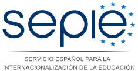

Credits for the ‘Empatheia’ Change Makers game
Empatheia is project result of the Change Makers project. ChangeMakers | Nurturing the design thinking mindset of children through gaming - AGREEMENT. Nº 2016-1-ES01-KA201-025214​ | © 2018 all rights reserved | version 1.0
Consortium partners:
Funding:
The European Commission support for the production of this publication does not constitute an endorsement of the contents which reflects the views only of the authors, and the Commission cannot be held responsible for any use which may be made of the information contained therein

Graphical Assets attribution and license:
Graphical assets of the Empatheia game have been designed by Boon and SDS.
Graphical assets are licensed under an Attribution-NonCommercial-ShareAlike (CC BY-NC-SA): This license lets others remix, tweak, and build upon your work non-commercially, as long as they credit you and license their new creations under the identical terms.
Game code attribution and license:
The software development has been done by the TIDE Research Group of Interactive and Distributed Technologies for Education (UPF), coordinators of the ChangeMakers project.
Copyright (C) 2018 Universitat Pompeu Fabra
This program is free software: you can redistribute it and/or modify
it under the terms of the GNU Affero General Public License as
published by the Free Software Foundation, version 3 of the
License.
This program is distributed in the hope that it will be useful,
but WITHOUT ANY WARRANTY; without even the implied warranty of
MERCHANTABILITY or FITNESS FOR A PARTICULAR PURPOSE. See the
GNU Affero General Public License for more details.
Read the GNU Affero General Public License version 3 here: LICENSE
Third party code licenses:
polyglot.js ©2012-2014 Airbnb, Inc. LICENSE
LokiJS Copyright (c) 2015 TechFort <joe.minichino@gmail.com> LICENSE
Cocos Creator (c) 2017-2018 Xiamen Yaji Software Co., Ltd. LICENSE
jQuery Copyright JS Foundation and other contributors, https://js.foundation/ LICENSE
Local translations and audio dialogues:
Spanish and English versions: Special thanks to members from UPF TIDE Research Group of Interactive and Distributed Technologies for Education (Kostas Michos, Ishari Amarasinghe, Marc Beardsley, Milica Vujovic, Pablo Abenia, Patricia Santos) and Batuhan Sayis (also from UPF) , who did the audio voices in English and Spanish versions.
Greek version: Special thanks to Gonata Zoi Marina, Kordalis Andreas, Christou Athanasios Christos, Nikolaidou Maria, Sapountzi Flora Natalia, Lambi Pelagia, Tsakiris Eythimios, Tsiplitari Aikaterini, Alexis Konstantinos
Norwegian version: Special thanks to Felix Aune, Mara og Thea Tabacaru
Portuguese version: Special thanks to Inês Henriques.
French version: Special thanks to Sabrine Bibollet, Charles Assier and Christophe Gouache
Background music:
Music (or "Medieval Introduction" song) by Tristan Lohengrin www.tristanlohengrin.fr
Benboncan (or "Workshop - wood carving" song) from https://freesound.org/people/Benboncan/sounds/59961/
j_o_j (or "Horse carriage " song) from https://freesound.org/people/j_o_j/sounds/363016/
inchadney (or "White noise (Town sounds) " song) from https://freesound.org/people/inchadney/sounds/40133/
Metzik (or "Medieval market" song) from https://freesound.org/people/Metzik/sounds/371222/
GoodListener (or "Soft horse neigh" song) from https://freesound.org/people/GoodListener/sounds/322450/
tigersound (or "Gravel walking" song) from https://freesound.org/people/tigersound/sounds/15562/
original_sound (or "Badges" song) from https://freesound.org/people/original_sound/sounds/366104/
Autistic Lucario (or "Error sound" song) from https://freesound.org/people/Autistic%20Lucario/sounds/142608/
Final acknowledgements:
We would like to acknowledge the collaboration of teachers and students from different schools in Europe who participated in the pilot testing activities of the game: Escola Ginebro in Catalonia, Spain; Scholé in Porto,Portugal; Ny Krohnborg skole in Bergen and Lyse Montessori skole in Bergen, Norway; Ecole Magnolias in Brussels, Belgium; 5th public primary school from Florina, Greece..